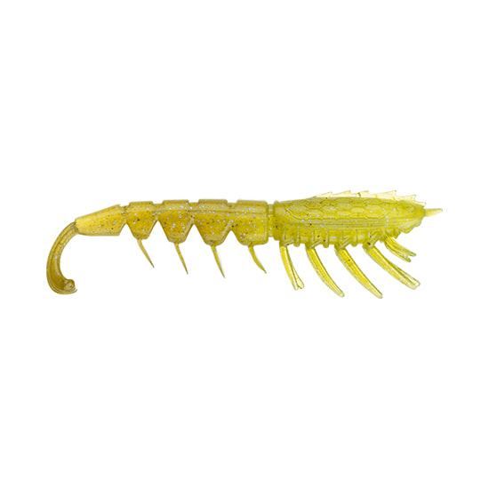
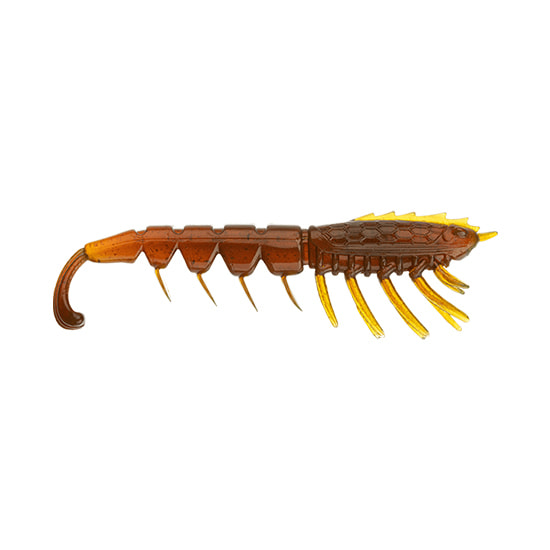
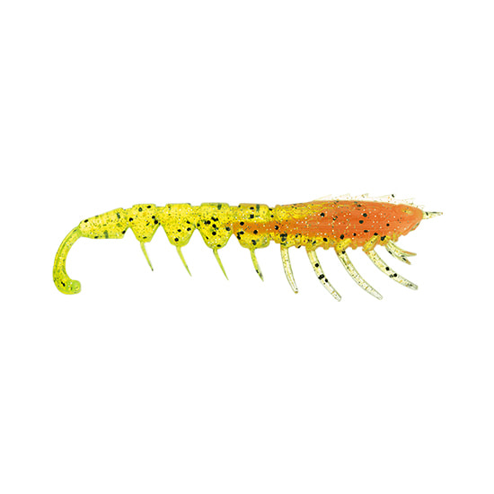
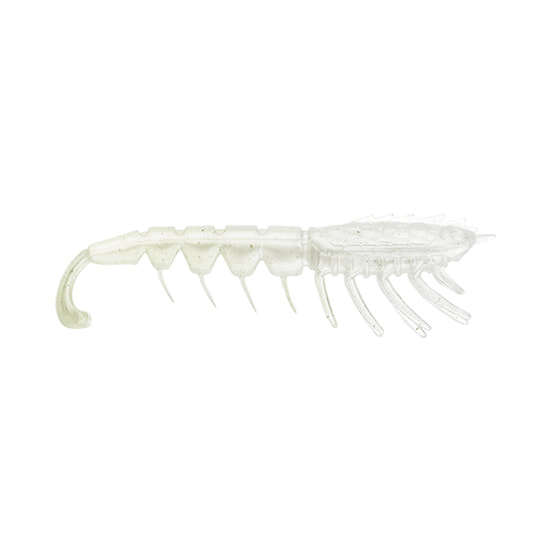

クラッシュシティ ザ インポスター
（CrushCity The Imposter）
クラッシュシティ ザ インポスター（CrushCity The Imposter）はRapala（ラパラ）のエビ型ワームです。
本物のエビやシュリンプのようなシルエットに、柔らかくて丈夫なエラストマー素材を採用。脚や触角がわずかな水流でも繊細に揺れるので、スレた魚の警戒心を解いてバイトに持ち込めます。

画像出典:ラパラ公式HP
スペック
- メーカー
- Rapala（ラパラ）
- タイプ
- エビ型ワーム（エラストマー素材）
- サイズ
- 2.5インチ／3インチ
- 入数
- 7本（2.5インチ）／6本（3インチ）
- フレーバー
- エビフレーバー配合
- ターゲット
- バス・シーバス、チヌなど
- 発売
- 2026年7月
▼今すぐチェック

クラッシュシティ ザ インポスターの特徴
見た目・動き・味でエビを演出する、エラストマー製のワーム
-
本物そっくりのエビシルエット
エビやシュリンプを思わせるリアルなシルエットで、スレた魚の警戒心を解く。エビを捕食している状況に合わせやすいワームだ。
-
わずかな水流でも揺れる脚と触角
柔軟なエラストマー素材の脚や触角が、わずかな水流でも繊細に揺れてナチュラルに誘う。ただ巻きではテールや脚部が繊細に動く。
-
耐久力のある素材とエビフレーバー
エラストマー素材は柔らかいのに耐久力があり、長く使える。さらにエビフレーバーを配合し、魚へのアピール力を高めている。
クラッシュシティ ザ インポスターの使い方
ジグヘッドにセットして、ただ巻きとリフト&フォールを組み合わせるのが基本です。
ただ巻きではテールや脚部が細かく動くので、ゆっくり巻いてから止め、脚の揺れで食わせの間を作ると効果的。根掛かりが多い場所では、オフセットフックを使ったセッティングも試してみましょう。
クラッシュシティ ザ インポスターの得意な状況
エビを捕食している魚を狙う場面や、ボリュームのあるワームに反応しないスレた魚を狙う場面が出番です。
ストラクチャーの際やボトム付近を丁寧に探る釣りに向いています。
わずかな水流でも脚が動くので、プレッシャーの高い場所でも釣れるチャンスを作れるワームです。
ワンポイント
エラストマー素材は一般的な塩ビ系のワームと混ぜて保管すると溶けることがあるので、パッケージのまま分けて保管すると安心です。
サイズは、ベイトが小さい時や軽いジグヘッドで使いたい時は2.5インチ、もう少し見せたい時は3インチを選びましょう。
人気カラー
クラッシュシティ ザ インポスターは全10色展開（サイズにより取り扱う色が異なります）。人気カラーを紹介します。

バナナプローン黄色みのあるエビカラー。濁りが入った時や、見せて誘いたい時に。

モーターオイルUVワームの定番、モーターオイルのUVカラー。迷った時の1色に。

ネオンヤビー明るい配色のヤビーカラー。視認性とアピールを重視したい時に。

パールホワイト白系で存在感を出せるカラー。3インチで展開。
画像出典:ラパラ公式HP
▼今すぐチェック
クラッシュシティ ザ インポスターに似ているルアー
-
 クラッシュシティ インフィルトレイター
ラパラ
詳細はこちら＞
クラッシュシティ インフィルトレイター
ラパラ
詳細はこちら＞
同じクラッシュシティのソフトスイムベイト。3インチ（約4.2g）と5インチ（約19.7g）があり、小魚を意識する場面で使い分けられる。
-
 ハタ喰い・蝦
ルーディーズ
詳細はこちら＞
ハタ喰い・蝦
ルーディーズ
詳細はこちら＞
リアルなシルエットとえびフレーバーを持つ、ハタ狙い向けのエビワーム。根魚狙いならこちらも候補になる。
-
 エビのさんぽ
ブリーデン
詳細はこちら＞
エビのさんぽ
ブリーデン
詳細はこちら＞
全長50mmのエビ型プラグ。ワームではなく、ただ巻きでエビが泳ぐプラグでシュリンプイーターを狙える。